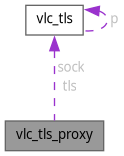

vlc_tls_proxy Struct Reference
Collaboration diagram for vlc_tls_proxy:

Data Fields | |
| vlc_tls_t | tls |
| vlc_tls_t * | sock |
Field Documentation
◆ sock
| vlc_tls_t* vlc_tls_proxy::sock |
Referenced by vlc_https_connect_proxy(), vlc_tls_ProxyGetFD(), vlc_tls_ProxyRead(), vlc_tls_ProxyShutdown(), and vlc_tls_ProxyWrite().
◆ tls
| vlc_tls_t vlc_tls_proxy::tls |
Referenced by vlc_https_connect_proxy().
The documentation for this struct was generated from the following file:
- modules/access/http/tunnel.c
Generated by